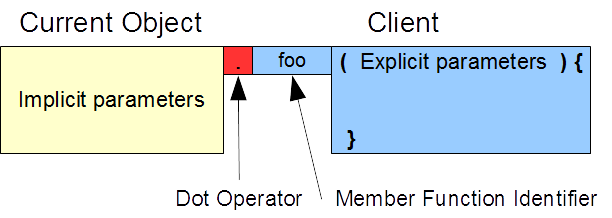
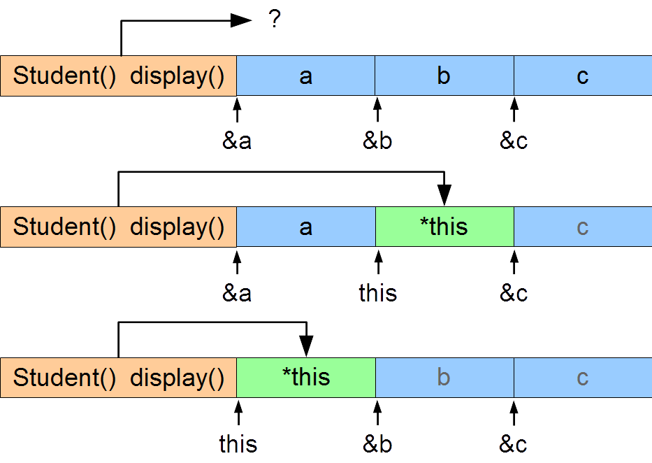

|
Software
Development |
 |
|
Part C - Encapsulation
The Current Object Distinguish a member function's access to instance variables and client variables Access the current object from within a member function "Each member function knows what object it was invoked for and can explicitly refer to it" (Stroustrup, 1997) Member Function Parameters | this | Summary | ExercisesOnce client code calls a member function on an object of its class and before that function returns control to the client code, that member function may need to refer to its host object. We refer to the host object from within a member function as the current object for that function. In other words, the current object is the region of memory that contains the data on which a member function currently operates. This chapter describes the mechanism by which a member function accesses its current object and shows how to refer to that current object from within the function. Member Function Parameters Member functions receive information through parameters and return information through a return value and possibly some of their parameters. The parameters of any member function are of two distinct kinds:
Explicit parameters receive information from the client code and return information to the client code. We define them explicitly in the header of a member function. Their lifetime extends from entry to the function to exit from the function. They have function scope. Implicit parameters tie the member function to the current object.  The syntax of a normal member function call reflects this two-part mechanism. The name of the object on which the client code invokes the function identifies the implicit parameters, while the arguments that the client code passes to the function initialize the explicit parameters. Consider the constructors and calls to the display() member function in the following code snippet:
The constructor for harry receives data in its explicit parameters and copies that data to the arguments in the call to the set() member function on the current object, which consists of the instance variables for harry. The constructor for josee receives data in its explicit parameters and copies that data to the arguments in the call to the set() member function on the current object, which consists of the instance variables for josee. The first client call to the display() member function accesses harry through its implicit parameters. The second client call accesses josee through its implicit parameters. this The keyword this returns the address of the current object. That is, this holds the address of the region of memory that contains all of the data stored in the instance variables of current object. *this refers to the current object itself; that is, to the complete set of its instance variables. We use the this keyword within a member function to refer to the complete set of instance variables that that member function is currently accessing through its implicit parameters. The figure below illustrates usage of the keyword. The top memory map shows two member function and three Student objects. The question mark indicates that the data on which the member function logic operates is unknown. The middle memory map identifies the data when the member functions are called on object b. The bottom memory map identifies the data when the member functions are called on object a.  For example, for the display() member function to return a copy of its host object, we write:
The keyword this has no meaning outside a member function. Reference to the Current Object We can improve this definition of display() by returning an unmodifiable reference to the current object rather than a copy of the object. This would improve performance if the object was large, since copying all of its instance variables would be compute intensive. Returning a reference only copies the object's address, which is typically a 4-byte operation:
The const qualifier on the return type prevents client code from placing the call to the member function on the left side of an assignment operator and thereby enabling a change to the instance variables themselves. Assigning to the Current Object To copy the values of the instance variables of one object into those of the current object, we dereference the keyword and use *this as the left operand in an assignment expression:
Example - Validated Input Let us introduce a member function to our Student class called read() that
To avoid duplicating validation logic, we
Since the temporary object (temp) and the current object are instances of the same class, this member function can access each object's instance variables directly. Summary
Exercises
|

| |
Top |
| Next: Member Operators |
| Designed by Chris Szalwinski | Copying From This Site |